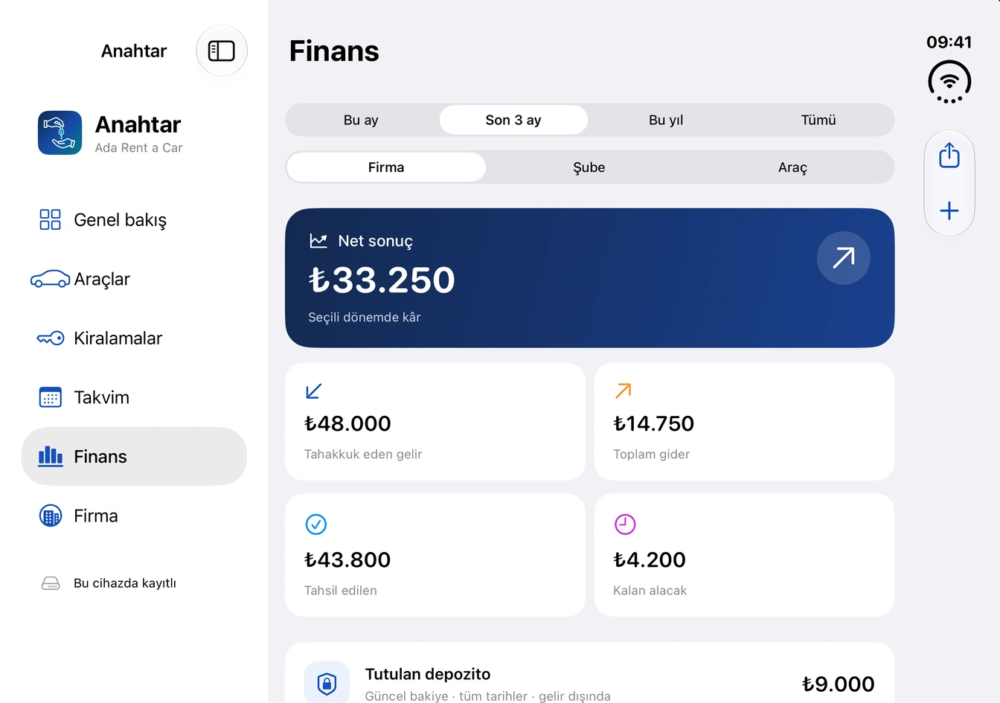

iPhone ve iPad için
Anahtar Filo Yönetimi
Seçtiğiniz tarihlerde müsait araçları bulun. Teslimde kilometreyi ve hasarı kaydedin, iadede depozitoyu kapatın. Araç ve şube giderlerini kiralama gelirleriyle birlikte görün.


Uygulama ekranları
Filo planından araç iadesine
Örnek bir kiralama firmasının kayıtlarıyla altı ekranı inceleyin. Bir görüntüyü açarak ayrıntılara yakından bakabilirsiniz.
01 / 06
Müsait araçları tarihe göre görün
Haftalık filo planında aynı tarihte hangi araçların kirada olduğunu yan yana görün. Yeni bir kiralamaya tarih seçerek başlayabilirsiniz.
iPhone Duo · İç ekranGörseli büyüt
02 / 06
Aracın durumunu kontrol edin
Plaka ve modele göre arayın. Şube, müsaitlik durumu ve yaklaşan sigorta veya muayene tarihleriyle birlikte araç kaydına ulaşın.
iPhone Duo · İç ekranGörseli büyüt
03 / 06
Hasarı araç üzerinde işaretleyin
Krokide hasarın yerini seçip pine açıklama ve fotoğraf ekleyin. Onarımı işaretlediğinizde eski kiralamanın kaydı korunur.
iPhone Duo · Dış ekranGörseli büyüt
04 / 06
Sözleşmeyi teslimde imzalayın
Kiralama bilgileriyle doldurulan sözleşmeyi kontrol edin. Ekranda imzaladıktan sonra PDF’i iOS paylaşım menüsünden gönderebilir veya yazdırabilirsiniz.
iPhone Duo · Dış ekranGörseli büyüt
05 / 06
Gelir, gider ve depozitoyu ayırın
Firma, şube veya araç bazında tahakkuk eden geliri, tahsilatı ve giderleri inceleyin. İade edilmeyi bekleyen depozitolar ayrı gösterilir.
iPhone Duo · İç ekranGörseli büyüt06 / 06
Ekibi aynı firmaya davet edin
Bulut planında her ekip üyesi kendi hesabıyla giriş yapar. Firma sahibi, kimin kayıtları düzenleyebileceğini ve kimin yalnızca görüntüleyebileceğini belirler.
iPhone Duo · Dış ekranGörseli büyüt
Planlar
Filonuza uygun plan
Basit planı hesap açmadan tek cihazda kullanabilirsiniz. Ücretli planlarla şubeleriniz ve ekip üyeleriniz aynı firma kayıtlarına birden fazla cihazdan erişebilir.
Aboneliği yönetme ve satın alımları geri yükleme| Plan | Şube | Araç | Aylık ücret |
|---|---|---|---|
| BasitBu cihazda | 2 | 10 | Ücretsiz |
| BaşlangıçBulut ve ekip | 2 | 20 | 300 TL |
| BüyümeBulut ve ekip | 5 | 50 | 500 TL |
| FiloBulut ve ekip | 20 | 200 | 700 TL |
Türkiye App Store’u için belirlenen aylık abonelik ücretleri. Anahtar şu anda TestFlight’ta dahili test aşamasında.
Yardım merkezi